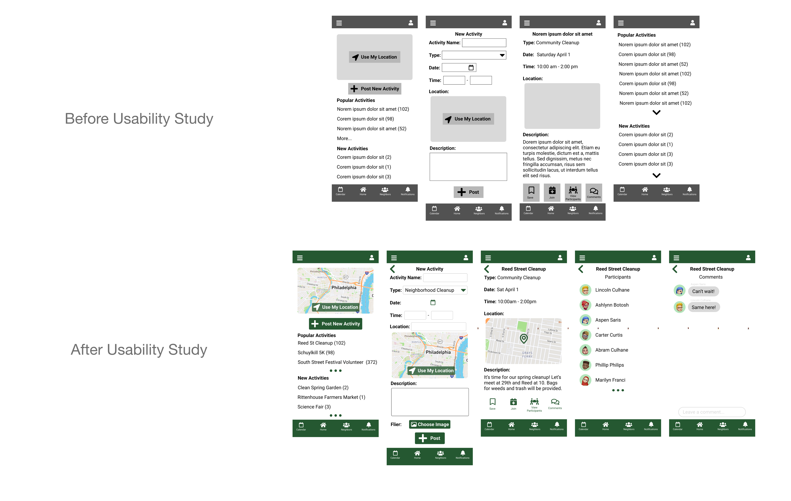
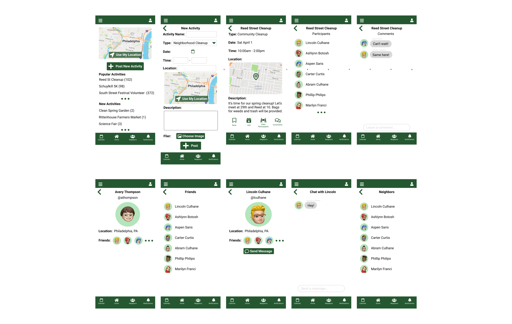
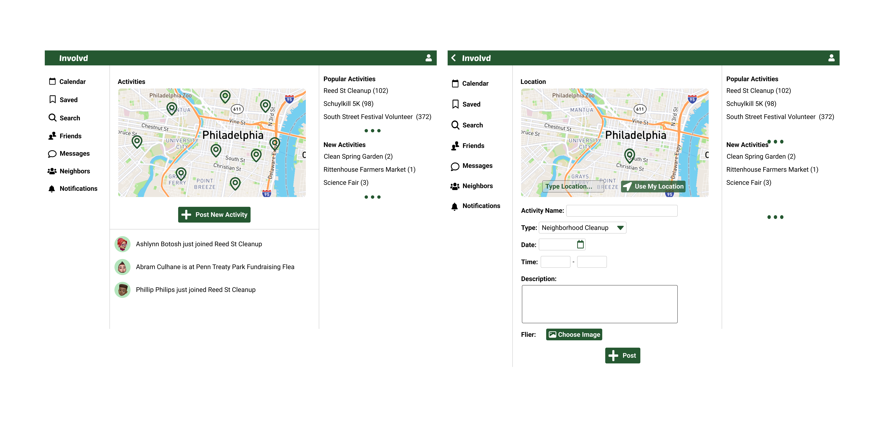
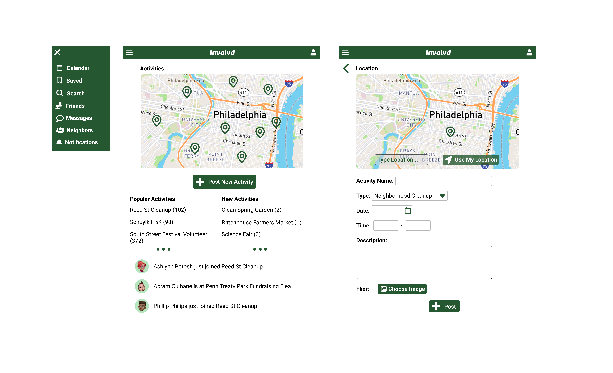

Involvd
Involvd is a mobile and desktop app that allows people to be involved in volunteering efforts to clean and directly help their community. It also allows users to find and share other community-building efforts like fundraisers, street fairs and block parties.

UX Case Study
UX
Role
I was the lead UX researcher and UX designer of this project.
The Goal
This app should be used as a platform for people to find and share activities to clean up and support their community. It provides a feed of activities that users can view, save, comment on and view their participants. It allows you to connect with and befriend neighbors, and join in and comment on their efforts. It also provides a calendar that lets you keep track of your scheduled activities.
User Research: Summary
I conducted interviews and then delineated empathy maps in order to understand the users of this app their needs. The primary user group identified through research was adults who want to help make their community cleaner, and be more involved with efforts that help their neighbors.
The research discovered that users want to see maps of where efforts are taking place in their community, to understand where efforts are occuring in relation to their location. Users also wanted to connect with their neighbors, so the ability to befriend and message neighbors and comment on events is a desired feature. Another feature users wanted was a calendar with a notifications to keep track and remind them of their scheduled events.
User Pain Points: Difficulty Finding Events
In addition to a list of events, it is more helpful to see a map with location markers of where efforts and events are located.
User Pain Points: Difficulty Finding Friends
The ability to find, befriend and message other neighbors makes the events they are involved with more valuable. It allows the user to have a deeper connection with their community.

Design: Wireframes
In the initial wireframes, I wanted to make the map the most prominent component of the homepage. Research suggested that this would be more valuable to the user than other features such as a list of events, because it brings focus to the user's immediate surroundings and neighborhood. The journey of finding an event nearby, viewing its information and participants was one path for the user could take to immediately connect with neighbors through the app.

Refining the Design
After the usability study, it was determined that friends having profiles with information on which events they were attending would allow users to discover more about potential events they could join. Other additions were refining the user interface and consolidating a styling of components and color palettes.

High-Fidelity Prototype
The final high-fidelity prototype presented cleaner user flows for adding a new activity, finding participants in an activity and messaging those participants.

Mockup: Desktop
